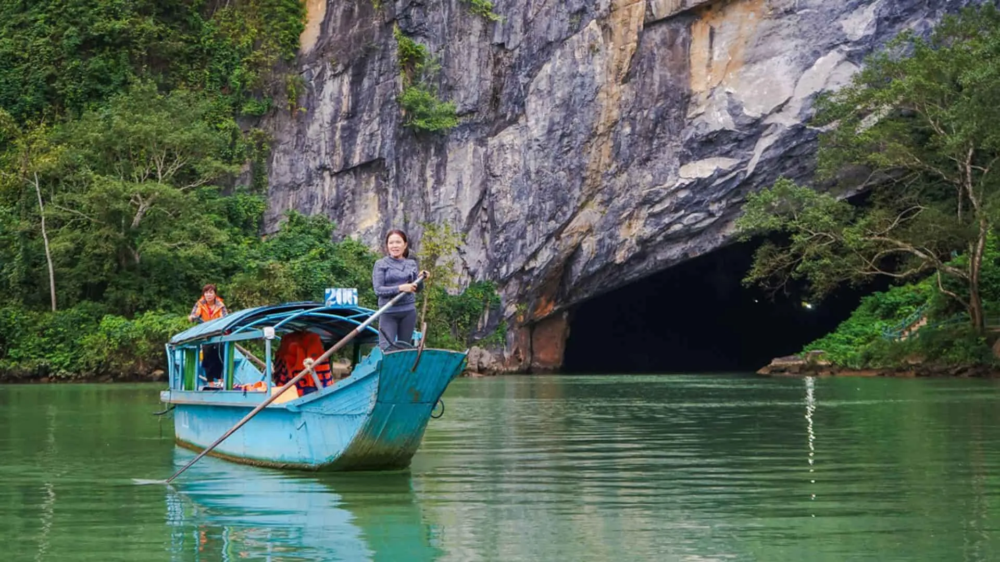
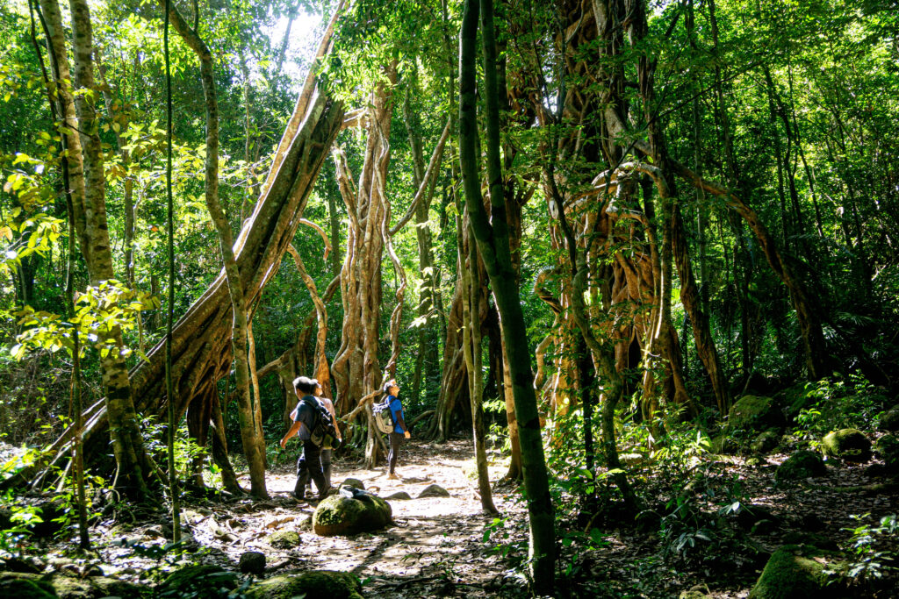
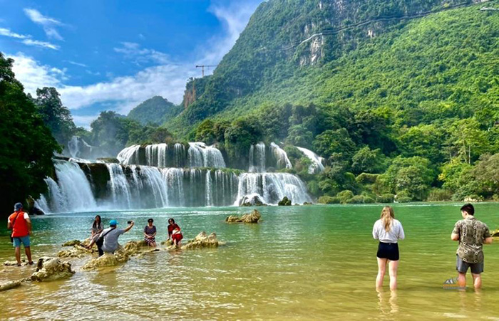
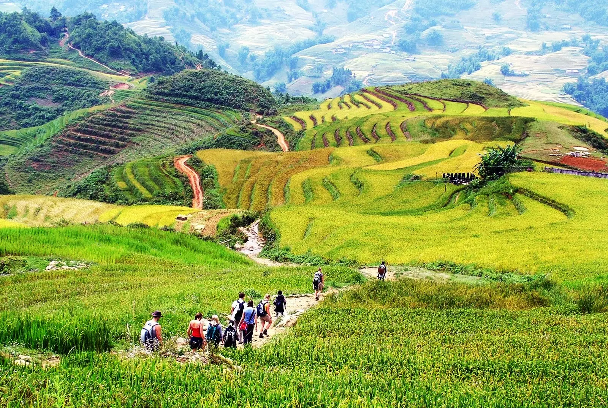
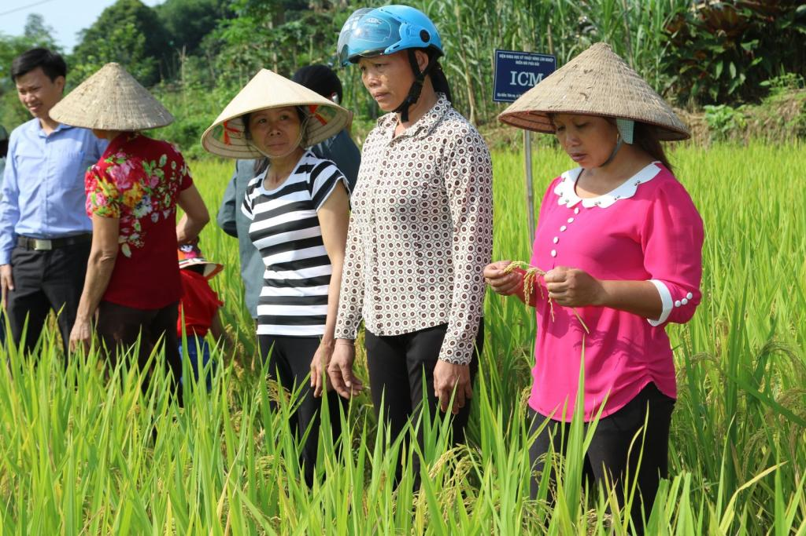
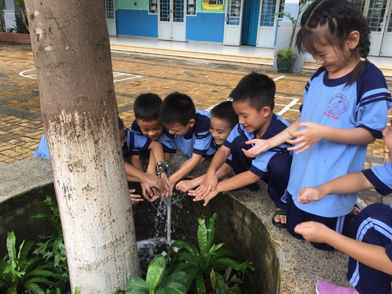
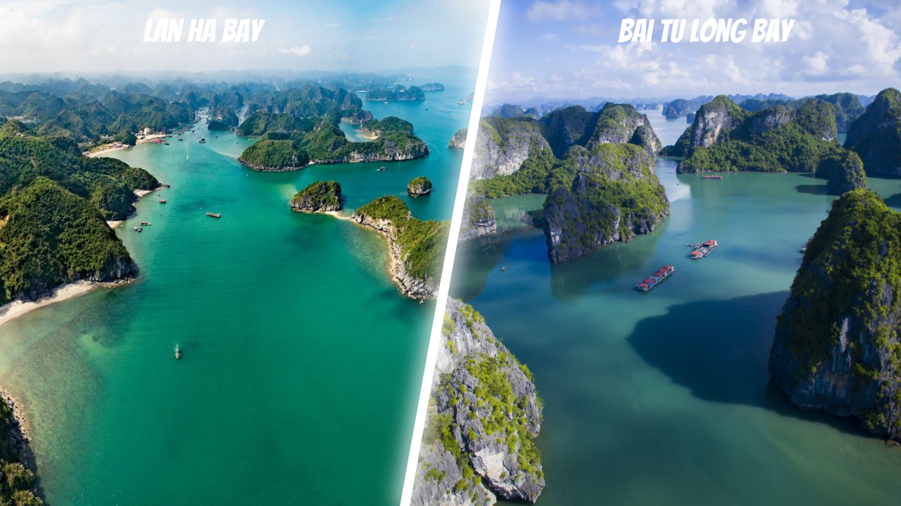
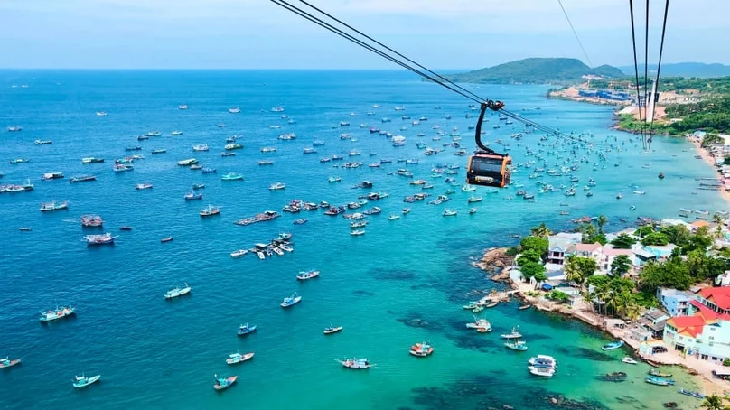

ECO TOURISM

1. National Parks and Nature Reserves
Vietnam is home to lush landscapes and protected areas that preserve biodiversity.
|
 ⭐ Phong Nha-Ke Bang National ParkFamous for its limestone karsts, caves, and underground rivers, including Son Doong Cave, the world’s largest cave. |
 ⭐ Cat Tien National ParkOffers trekking through tropical forests, wildlife spotting, and conservation programs that protect rare species. |
 ⭐ Ba Be National ParkKnown for freshwater lakes, waterfalls, and ethnic minority villages. Visitors can hike, kayak, and observe rare wildlife while learning about conservation and the ecological importance of the area. |
2. Sustainable Rural and Community Tourism
Vietnam’s ecotourism often connects visitors with local communities in a sustainable way.
|
 ⭐ Homestays and Cultural ImmersionStaying in ethnic minority villages allows tourists to experience traditional farming, handicrafts, and local cuisine while learning about daily community life. |
 ⭐ Participatory ActivitiesVisitors can take part in rice planting, organic farming, or fishing, supporting local livelihoods while promoting environmentally friendly tourism practices. |
 ⭐ Environmental EducationPrograms often teach how communities protect forests, rivers, and wildlife. This encourages cultural exchange while raising environmental awareness among visitors. |
3. Marine and Coastal Ecotourism
Vietnam’s coastline and islands offer rich marine biodiversity and sustainable tourism options.
|
 ⭐ Ha Long Bay and Lan Ha BayVisitors can explore karst formations, kayak through limestone caves, and learn about marine ecosystems. |
 ⭐ Con Dao and Phu Quoc IslandsOpportunities to snorkel or dive while observing coral reefs, sea turtles, and mangroves. |

⭐ Conservation and Sustainable PracticesEcotourism programs often include beach cleanups, wildlife protection, and sustainable fishing practices, emphasizing conservation while connecting tourists with coastal ecosystems. |